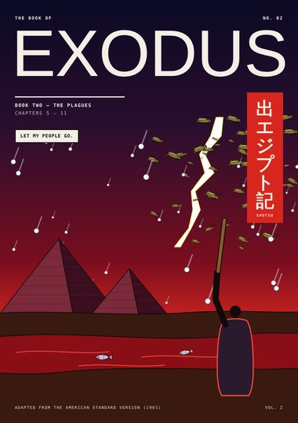
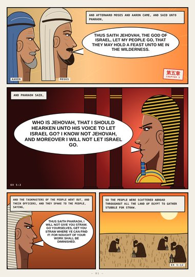
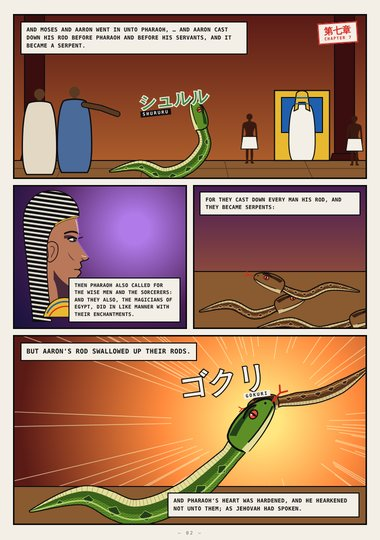
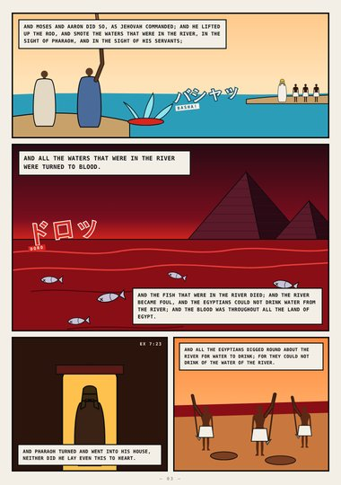
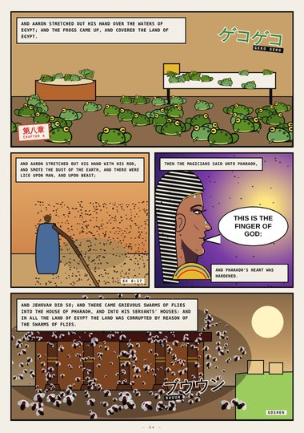
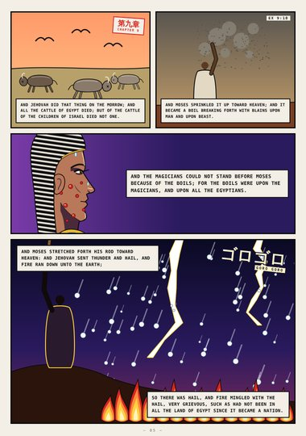
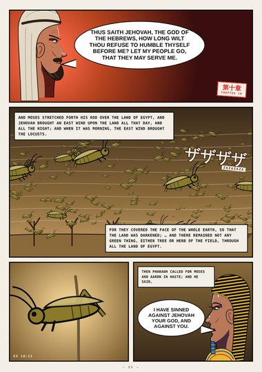
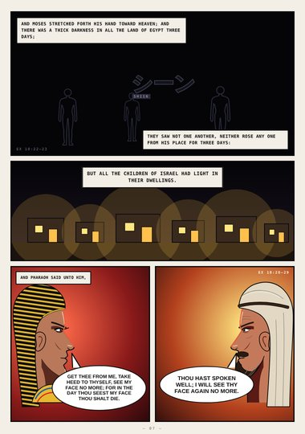
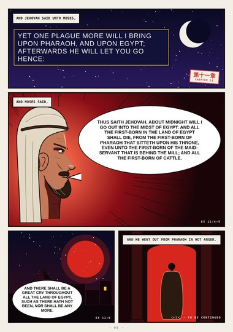

Exodus (digest) · Book Two · Exodus 5–11
The Plagues
Let my people go: the rods that became serpents, the river turned to blood, frogs, lice, flies, hail and fire, locusts, darkness, and the warning of midnight.
Digest edition: an early, abridged first draft (highlights only). The full edition is replacing it.
Start reading ›Pages

CoverCoverExodus 5–11
Page 1Let My People GoExodus 5:1–12
Page 2Rod Against RodExodus 7:10–13
Page 3The River Turned to BloodExodus 7:20–24
Page 4Frogs, Lice and FliesExodus 8:6–24
Page 5Murrain, Boils and HailExodus 9:6–24
Page 6The LocustsExodus 10:3–16
Page 7DarknessExodus 10:21–29
Page 8One Plague MoreExodus 11:1–8